# 核心包
library(lme4) # 混合效应模型主力包
library(lmerTest) # 提供 p 值
library(performance) # 模型诊断
library(sjPlot) # 结果可视化
library(tidyverse) # 数据处理
library(broom.mixed) # 模型整理
library(MuMIn) # 模型比较多水平/混合效应模型完全指南
R语言方法
统计建模
混合效应模型
什么是多水平模型？
多水平模型（Multilevel Model），也称混合效应模型（Mixed Effects Model） 或层次模型（Hierarchical Model），用于分析具有嵌套/层次结构的数据。
数据层次结构示例
| 层次结构 | 第一层 | 第二层 | 第三层 |
|---|---|---|---|
| 教育研究 | 学生 | 班级 | 学校 |
| 临床试验 | 测量时点 | 患者 | 医院 |
| 心理学 | 试验 | 被试 | 实验条件 |
| 组织行为 | 员工 | 团队 | 公司 |
为什么需要多水平模型？
- 违反独立性假设：同一组内的观测不独立
- 避免聚合偏差：保持原始数据层次
- 正确估计方差：考虑组内相关性
- 研究跨层效应：探索不同层次变量的影响
核心概念
| 概念 | 定义 |
|---|---|
| 固定效应 | 所有组共享的效应（总体平均） |
| 随机效应 | 各组特有的随机变异 |
| 随机截距 | 各组的基线水平不同 |
| 随机斜率 | 各组的效应强度不同 |
| ICC | 组内相关系数，组间方差占总方差的比例 |
R 包安装与加载
数据准备
使用模拟的教育数据：学生成绩（学生嵌套在班级中）
# 模拟两层嵌套数据
set.seed(2024)
n_classes <- 30 # 班级数
n_students <- 20 # 每班学生数
N <- n_classes * n_students # 总样本量
# 生成班级层面数据
class_data <- tibble(
class_id = 1:n_classes,
teacher_exp = round(runif(n_classes, 1, 20)), # 教师经验（年）
class_size = sample(25:40, n_classes, replace = TRUE),
# 班级层面随机效应
class_intercept = rnorm(n_classes, 0, 8), # 随机截距
class_slope = rnorm(n_classes, 0, 0.3) # 随机斜率
)
# 生成学生层面数据
student_data <- tibble(
student_id = 1:N,
class_id = rep(1:n_classes, each = n_students),
# 学生变量
prior_score = round(rnorm(N, 70, 12)), # 先前成绩
study_hours = round(pmax(0, rnorm(N, 10, 4))), # 学习时长
gender = factor(sample(c("男", "女"), N, replace = TRUE))
) |>
left_join(class_data, by = "class_id") |>
mutate(
# 生成结局：数学成绩
score = 20 +
0.5 * prior_score + # 个体效应
(2 + class_slope) * study_hours + # 随机斜率效应
0.8 * teacher_exp + # 班级效应
class_intercept + # 随机截距
rnorm(N, 0, 8) # 残差
) |>
mutate(
score = round(pmin(100, pmax(0, score))),
class_id = factor(class_id)
)
# 查看数据
glimpse(student_data)Rows: 600
Columns: 10
$ student_id <int> 1, 2, 3, 4, 5, 6, 7, 8, 9, 10, 11, 12, 13, 14, 15, 16,…
$ class_id <fct> 1, 1, 1, 1, 1, 1, 1, 1, 1, 1, 1, 1, 1, 1, 1, 1, 1, 1, …
$ prior_score <dbl> 55, 64, 62, 78, 77, 45, 56, 56, 70, 84, 97, 75, 83, 72…
$ study_hours <dbl> 9, 9, 13, 14, 13, 7, 8, 17, 17, 4, 6, 15, 9, 6, 8, 6, …
$ gender <fct> 女, 女, 男, 男, 女, 女, 男, 男, 男, 女, 男, 女, 女, 男, 女, 男, 女, 女, …
$ teacher_exp <dbl> 17, 17, 17, 17, 17, 17, 17, 17, 17, 17, 17, 17, 17, 17…
$ class_size <int> 38, 38, 38, 38, 38, 38, 38, 38, 38, 38, 38, 38, 38, 38…
$ class_intercept <dbl> -11.51835, -11.51835, -11.51835, -11.51835, -11.51835,…
$ class_slope <dbl> 0.4778841, 0.4778841, 0.4778841, 0.4778841, 0.4778841,…
$ score <dbl> 68, 88, 76, 100, 91, 69, 69, 87, 100, 68, 90, 100, 78,…探索性分析
# 查看各班级成绩分布
ggplot(student_data, aes(x = class_id, y = score, fill = class_id)) +
geom_boxplot(show.legend = FALSE, alpha = 0.7) +
scale_fill_viridis_d() +
labs(
title = "各班级数学成绩分布",
x = "班级",
y = "成绩"
) +
theme_minimal(base_size = 11) +
theme(axis.text.x = element_text(angle = 45, hjust = 1))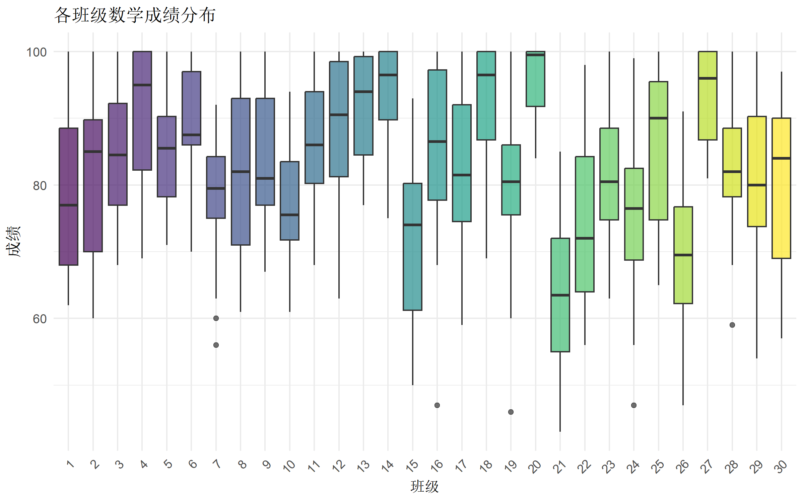
# 各班级回归线
ggplot(student_data, aes(x = study_hours, y = score, color = class_id)) +
geom_point(alpha = 0.3, size = 1) +
geom_smooth(method = "lm", se = FALSE, linewidth = 0.5) +
scale_color_viridis_d() +
labs(
title = "学习时长与成绩的关系（按班级）",
subtitle = "斜率的变异提示需要随机斜率模型",
x = "每周学习时长",
y = "数学成绩"
) +
theme_minimal(base_size = 12) +
theme(legend.position = "none")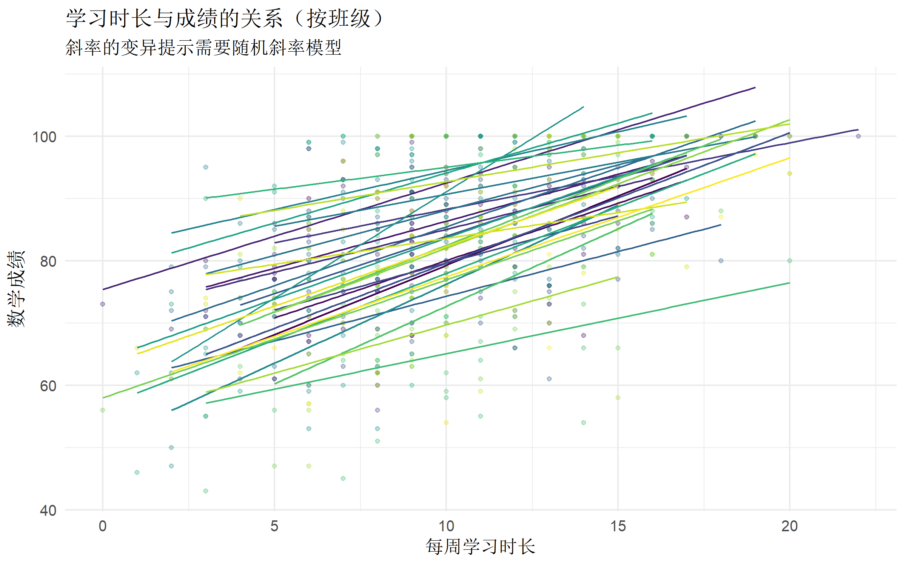
计算组内相关系数 (ICC)
ICC 衡量组间变异占总变异的比例，用于判断是否需要多水平模型。
# 拟合空模型（仅含随机截距）
null_model <- lmer(score ~ 1 + (1 | class_id), data = student_data)
# 计算 ICC
icc(null_model)# Intraclass Correlation Coefficient
Adjusted ICC: 0.294
Unadjusted ICC: 0.294解读： - ICC > 0.05 通常建议使用多水平模型 - ICC 表示约 X% 的成绩差异归因于班级间差异
模型构建
模型 1：随机截距模型
# 随机截距模型
# (1 | class_id) 表示班级有不同的基准水平
model1 <- lmer(
score ~ study_hours + prior_score + gender + (1 | class_id),
data = student_data
)
summary(model1)Linear mixed model fit by REML. t-tests use Satterthwaite's method [
lmerModLmerTest]
Formula: score ~ study_hours + prior_score + gender + (1 | class_id)
Data: student_data
REML criterion at convergence: 4180
Scaled residuals:
Min 1Q Median 3Q Max
-3.3501 -0.6802 0.0232 0.6909 2.7313
Random effects:
Groups Name Variance Std.Dev.
class_id (Intercept) 49.27 7.019
Residual 53.41 7.308
Number of obs: 600, groups: class_id, 30
Fixed effects:
Estimate Std. Error df t value Pr(>|t|)
(Intercept) 37.07606 2.41343 253.77145 15.362 <2e-16 ***
study_hours 1.72842 0.07830 570.76205 22.075 <2e-16 ***
prior_score 0.40721 0.02598 568.70999 15.672 <2e-16 ***
gender女 -0.18581 0.61609 570.82714 -0.302 0.763
---
Signif. codes: 0 '***' 0.001 '**' 0.01 '*' 0.05 '.' 0.1 ' ' 1
Correlation of Fixed Effects: (Intr) stdy_h prr_sc
study_hours -0.330
prior_score -0.764 0.010
gender女 -0.148 -0.012 0.033模型 2：随机斜率模型
# 随机斜率模型
# (study_hours | class_id) 表示学习时长的效应因班级而异
model2 <- lmer(
score ~ study_hours + prior_score + gender + (study_hours | class_id),
data = student_data
)
summary(model2)Linear mixed model fit by REML. t-tests use Satterthwaite's method [
lmerModLmerTest]
Formula: score ~ study_hours + prior_score + gender + (study_hours | class_id)
Data: student_data
REML criterion at convergence: 4171.8
Scaled residuals:
Min 1Q Median 3Q Max
-3.4465 -0.6501 0.0372 0.7114 2.7951
Random effects:
Groups Name Variance Std.Dev. Corr
class_id (Intercept) 86.86538 9.3202
study_hours 0.05472 0.2339 -1.00
Residual 52.63035 7.2547
Number of obs: 600, groups: class_id, 30
Fixed effects:
Estimate Std. Error df t value Pr(>|t|)
(Intercept) 36.94511 2.64657 106.90776 13.960 <2e-16 ***
study_hours 1.72766 0.08858 62.90176 19.503 <2e-16 ***
prior_score 0.40979 0.02577 568.62417 15.899 <2e-16 ***
gender女 -0.26772 0.61022 570.19279 -0.439 0.661
---
Signif. codes: 0 '***' 0.001 '**' 0.01 '*' 0.05 '.' 0.1 ' ' 1
Correlation of Fixed Effects: (Intr) stdy_h prr_sc
study_hours -0.570
prior_score -0.690 0.006
gender女 -0.134 -0.009 0.033
optimizer (nloptwrap) convergence code: 0 (OK)
boundary (singular) fit: see help('isSingular')模型 3：添加跨层变量
# 添加班级层面的解释变量
model3 <- lmer(
score ~ study_hours + prior_score + gender + teacher_exp +
(study_hours | class_id),
data = student_data
)
summary(model3)Linear mixed model fit by REML. t-tests use Satterthwaite's method [
lmerModLmerTest]
Formula:
score ~ study_hours + prior_score + gender + teacher_exp + (study_hours |
class_id)
Data: student_data
REML criterion at convergence: 4164
Scaled residuals:
Min 1Q Median 3Q Max
-3.3693 -0.6613 0.0374 0.7236 2.7826
Random effects:
Groups Name Variance Std.Dev. Corr
class_id (Intercept) 71.6293 8.4634
study_hours 0.0599 0.2448 -1.00
Residual 52.5735 7.2508
Number of obs: 600, groups: class_id, 30
Fixed effects:
Estimate Std. Error df t value Pr(>|t|)
(Intercept) 30.81048 3.13697 101.58371 9.822 < 2e-16 ***
study_hours 1.73530 0.08950 56.62115 19.389 < 2e-16 ***
prior_score 0.40914 0.02575 568.95067 15.886 < 2e-16 ***
gender女 -0.26085 0.60933 570.92035 -0.428 0.66874
teacher_exp 0.56942 0.17116 28.83962 3.327 0.00241 **
---
Signif. codes: 0 '***' 0.001 '**' 0.01 '*' 0.05 '.' 0.1 ' ' 1
Correlation of Fixed Effects: (Intr) stdy_h prr_sc gendr女
study_hours -0.478
prior_score -0.572 0.005
gender女 -0.116 -0.009 0.033
teacher_exp -0.584 0.027 -0.016 0.004
optimizer (nloptwrap) convergence code: 0 (OK)
boundary (singular) fit: see help('isSingular')模型 4：跨层交互作用
# 检验教师经验是否调节学习时长的效应
model4 <- lmer(
score ~ study_hours * teacher_exp + prior_score + gender +
(study_hours | class_id),
data = student_data
)
summary(model4)Linear mixed model fit by REML. t-tests use Satterthwaite's method [
lmerModLmerTest]
Formula:
score ~ study_hours * teacher_exp + prior_score + gender + (study_hours |
class_id)
Data: student_data
REML criterion at convergence: 4170.1
Scaled residuals:
Min 1Q Median 3Q Max
-3.4071 -0.6581 0.0418 0.7183 2.7709
Random effects:
Groups Name Variance Std.Dev. Corr
class_id (Intercept) 72.56481 8.518
study_hours 0.06201 0.249 -1.00
Residual 52.61972 7.254
Number of obs: 600, groups: class_id, 30
Fixed effects:
Estimate Std. Error df t value Pr(>|t|)
(Intercept) 29.18486 4.13454 43.62636 7.059 9.80e-09 ***
study_hours 1.83367 0.18552 50.45406 9.884 2.16e-13 ***
teacher_exp 0.72122 0.30398 28.35875 2.373 0.0247 *
prior_score 0.40945 0.02577 568.04888 15.889 < 2e-16 ***
gender女 -0.27831 0.61019 569.48840 -0.456 0.6485
study_hours:teacher_exp -0.00935 0.01543 53.35172 -0.606 0.5472
---
Signif. codes: 0 '***' 0.001 '**' 0.01 '*' 0.05 '.' 0.1 ' ' 1
Correlation of Fixed Effects: (Intr) stdy_h tchr_x prr_sc gendr女
study_hours -0.746
teacher_exp -0.786 0.731
prior_score -0.445 0.018 0.006
gender女 -0.059 -0.043 -0.034 0.032
stdy_hrs:t_ 0.650 -0.875 -0.827 -0.018 0.045
optimizer (nloptwrap) convergence code: 0 (OK)
boundary (singular) fit: see help('isSingular')模型比较
似然比检验
# 比较随机截距 vs 随机斜率模型
anova(model1, model2) # 检验随机斜率是否必要Data: student_data
Models:
model1: score ~ study_hours + prior_score + gender + (1 | class_id)
model2: score ~ study_hours + prior_score + gender + (study_hours | class_id)
npar AIC BIC logLik -2*log(L) Chisq Df Pr(>Chisq)
model1 6 4186.5 4212.9 -2087.3 4174.5
model2 8 4182.3 4217.5 -2083.2 4166.3 8.2451 2 0.0162 *
---
Signif. codes: 0 '***' 0.001 '**' 0.01 '*' 0.05 '.' 0.1 ' ' 1信息准则比较
# AIC/BIC 比较
model_comparison <- data.frame(
Model = c("随机截距", "随机斜率", "含跨层变量", "含交互作用"),
AIC = c(AIC(model1), AIC(model2), AIC(model3), AIC(model4)),
BIC = c(BIC(model1), BIC(model2), BIC(model3), BIC(model4))
) |>
mutate(
Delta_AIC = AIC - min(AIC),
Delta_BIC = BIC - min(BIC)
)
model_comparison Model AIC BIC Delta_AIC Delta_BIC
1 随机截距 4192.037 4218.419 10.035207 0.000000
2 随机斜率 4187.841 4223.016 5.838907 4.597560
3 含跨层变量 4182.002 4221.574 0.000000 3.155582
4 含交互作用 4190.142 4234.111 8.140060 15.692572R² 计算
# 边际 R²（仅固定效应）和条件 R²（固定+随机效应）
r2(model3)Random effect variances not available. Returned R2 does not account for random effects.# R2 for Mixed Models
Conditional R2: NA
Marginal R2: 0.600结果解释
固定效应
# 提取固定效应
fixef(model3)(Intercept) study_hours prior_score gender女 teacher_exp
30.8104788 1.7352975 0.4091422 -0.2608521 0.5694199 # 置信区间
confint(model3, parm = "beta_", method = "Wald") 2.5 % 97.5 %
(Intercept) 24.6621365 36.9588210
study_hours 1.5598819 1.9107131
prior_score 0.3586641 0.4596204
gender女 -1.4551098 0.9334056
teacher_exp 0.2339522 0.9048876随机效应
# 随机效应方差
VarCorr(model3) Groups Name Std.Dev. Corr
class_id (Intercept) 8.46341
study_hours 0.24475 -1.000
Residual 7.25076 # 各班级的随机效应
ranef(model3)$class_id |> head(10) (Intercept) study_hours
1 -8.913800 0.25777883
2 1.026193 -0.02967655
3 1.075480 -0.03110190
4 9.109699 -0.26344406
5 2.028876 -0.05867322
6 2.553099 -0.07383327
7 -2.481370 0.07175894
8 -2.517308 0.07279822
9 -3.838791 0.11101429
10 -6.177900 0.17865914整洁输出
# 使用 sjPlot 生成表格
tab_model(model3,
show.se = TRUE,
show.ci = 0.95,
show.stat = TRUE,
title = "多水平线性回归结果")| score | |||||
|---|---|---|---|---|---|
| Predictors | Estimates | std. Error | CI | Statistic | p |
| (Intercept) | 30.81 | 3.14 | 24.65 – 36.97 | 9.82 | <0.001 |
| study hours | 1.74 | 0.09 | 1.56 – 1.91 | 19.39 | <0.001 |
| prior score | 0.41 | 0.03 | 0.36 – 0.46 | 15.89 | <0.001 |
| gender [女] | -0.26 | 0.61 | -1.46 – 0.94 | -0.43 | 0.669 |
| teacher exp | 0.57 | 0.17 | 0.23 – 0.91 | 3.33 | 0.001 |
| Random Effects | |||||
| σ2 | 52.57 | ||||
| τ00 class_id | 71.63 | ||||
| τ11 class_id.study_hours | 0.06 | ||||
| ρ01 class_id | -1.00 | ||||
| N class_id | 30 | ||||
| Observations | 600 | ||||
| Marginal R2 / Conditional R2 | 0.600 / NA | ||||
模型诊断
残差检验
# 综合诊断
check_model(model3)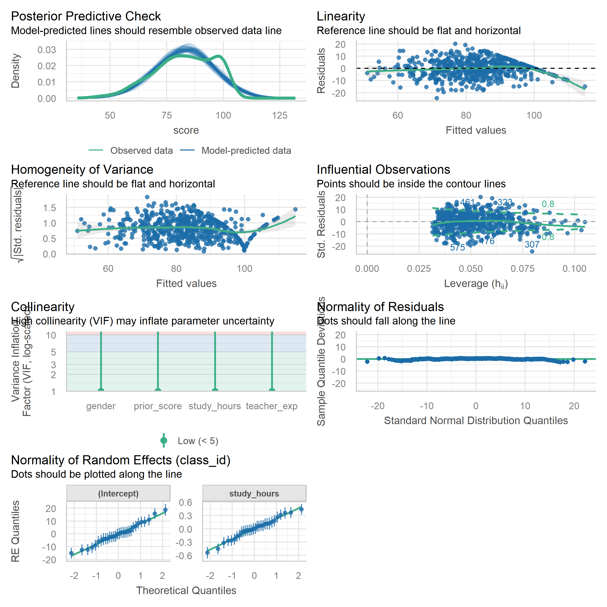
正态性检验
# 第一层残差
plot(model3, type = c("p", "smooth"))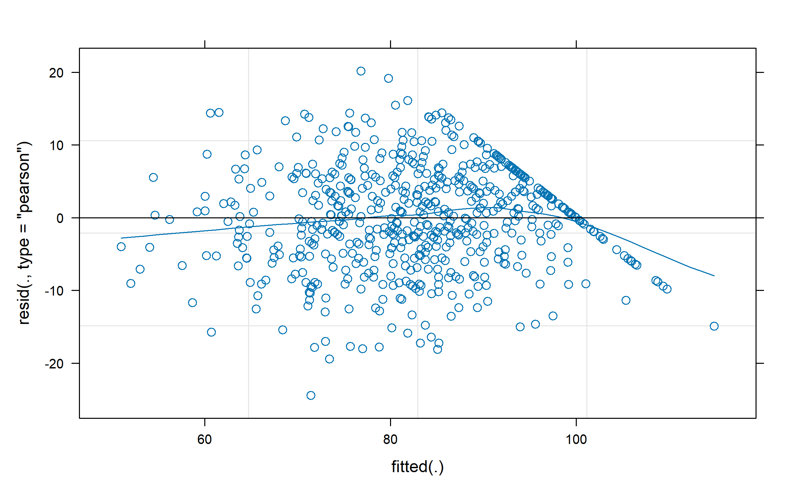
# 第二层随机效应
qqnorm(ranef(model3)$class_id$`(Intercept)`, main = "随机截距 Q-Q 图")
qqline(ranef(model3)$class_id$`(Intercept)`)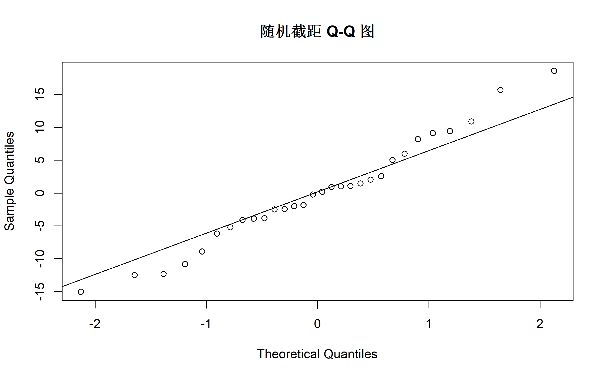
影响诊断
# 检测有影响力的组
influence_class <- influence(model3, group = "class_id")
# Cook's 距离
cooks_d <- cooks.distance(influence_class)
plot(cooks_d, type = "h", main = "各班级 Cook's 距离")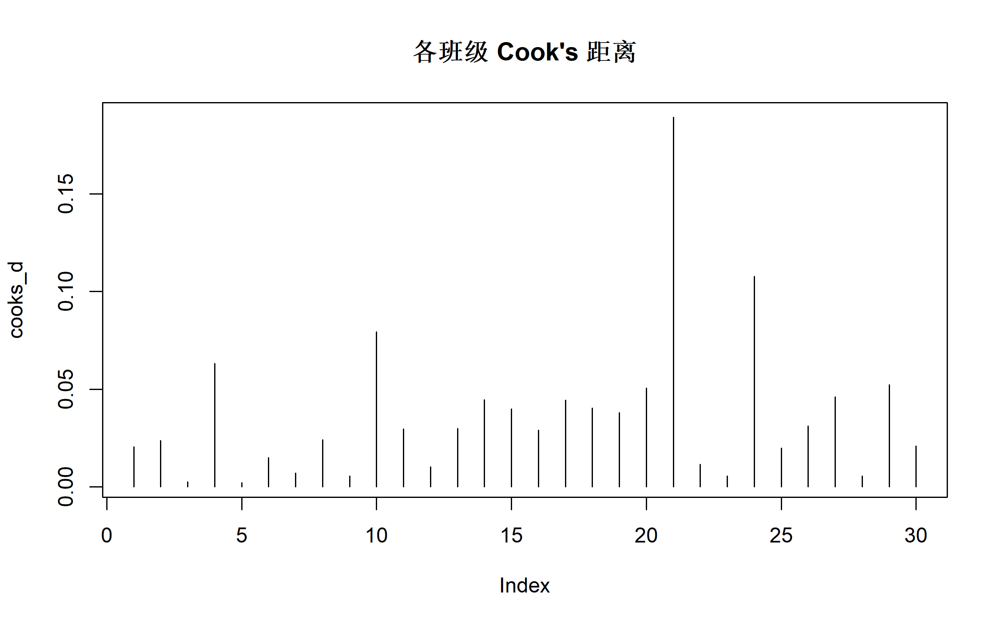
可视化
固定效应可视化
# 固定效应森林图
plot_model(model3, type = "est", show.values = TRUE,
title = "固定效应估计")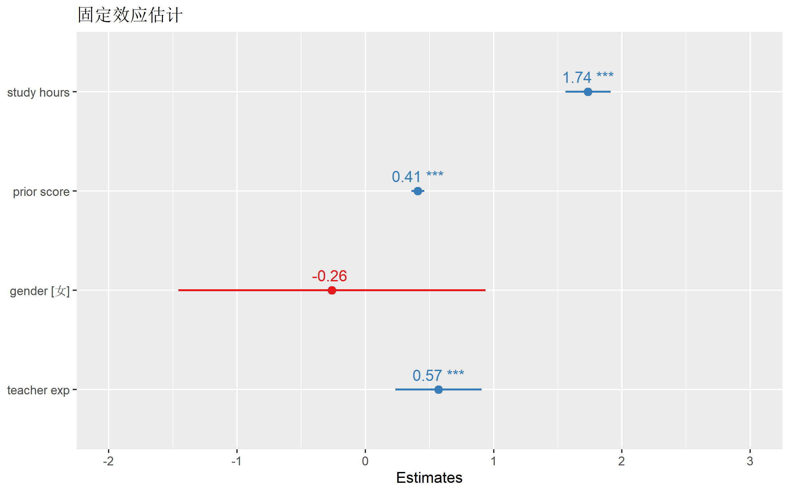
随机效应可视化
# 随机效应分布
plot_model(model3, type = "re",
title = "各班级随机效应")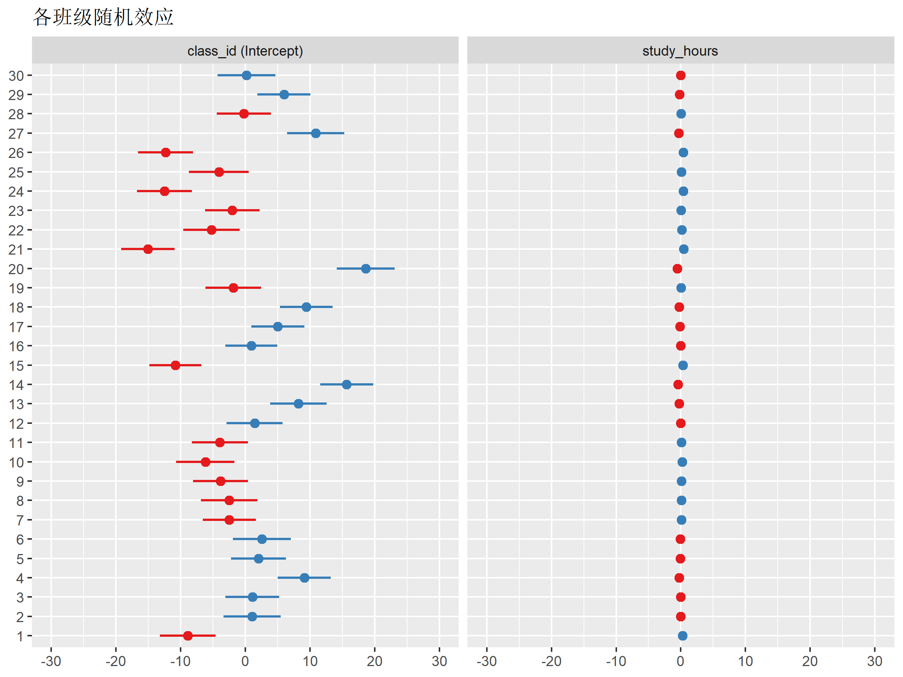
条件效应图
# 预测图：学习时长与成绩（考虑随机效应）
plot_model(model3, type = "pred", terms = "study_hours",
title = "学习时长的预测效应")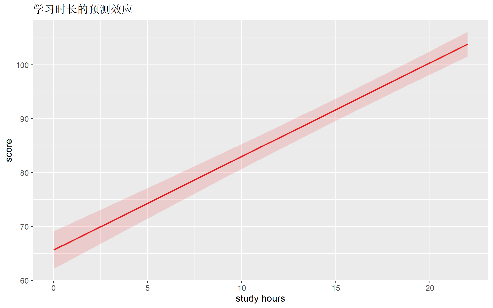
边际效应
# 查看边际效应
library(ggeffects)
# 预测值
pred_hours <- ggpredict(model3, terms = "study_hours [0:20]")
plot(pred_hours) +
labs(title = "学习时长的边际效应")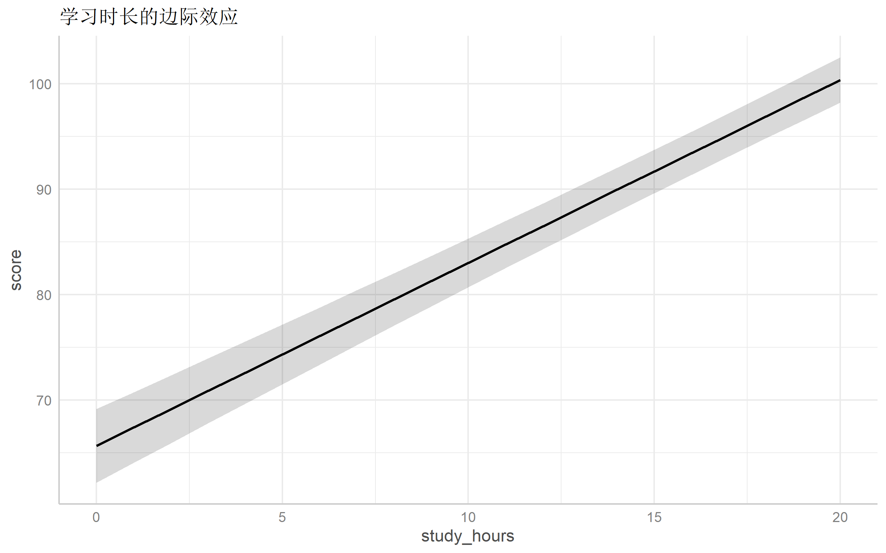
交互效应可视化
# 跨层交互作用
pred_interact <- ggpredict(model4, terms = c("study_hours", "teacher_exp [5, 10, 15]"))
plot(pred_interact) +
labs(
title = "学习时长 × 教师经验的交互效应",
color = "教师经验"
)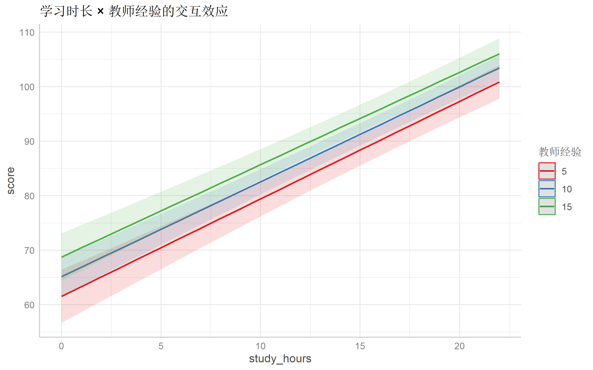
广义混合效应模型 (GLMM)
对于非正态分布的结局变量：
二分类结局
# 模拟二分类数据：是否通过考试
student_data <- student_data |>
mutate(
pass = as.integer(score >= 60)
)
# Logistic 混合效应模型
glmm_logit <- glmer(
pass ~ study_hours + prior_score + (1 | class_id),
data = student_data,
family = binomial
)
summary(glmm_logit)Generalized linear mixed model fit by maximum likelihood (Laplace
Approximation) [glmerMod]
Family: binomial ( logit )
Formula: pass ~ study_hours + prior_score + (1 | class_id)
Data: student_data
AIC BIC logLik -2*log(L) df.resid
157.1 174.7 -74.5 149.1 596
Scaled residuals:
Min 1Q Median 3Q Max
-5.5559 0.0244 0.0573 0.1329 1.6747
Random effects:
Groups Name Variance Std.Dev.
class_id (Intercept) 3.444 1.856
Number of obs: 600, groups: class_id, 30
Fixed effects:
Estimate Std. Error z value Pr(>|z|)
(Intercept) -6.32502 1.89259 -3.342 0.000832 ***
study_hours 0.38210 0.08449 4.522 6.11e-06 ***
prior_score 0.11643 0.02632 4.424 9.70e-06 ***
---
Signif. codes: 0 '***' 0.001 '**' 0.01 '*' 0.05 '.' 0.1 ' ' 1
Correlation of Fixed Effects:
(Intr) stdy_h
study_hours -0.588
prior_score -0.911 0.392# OR 及 95% CI
exp(fixef(glmm_logit))(Intercept) study_hours prior_score
0.001790937 1.465353355 1.123484111 exp(confint(glmm_logit, parm = "beta_", method = "Wald")) 2.5 % 97.5 %
(Intercept) 4.386341e-05 0.07312374
study_hours 1.241724e+00 1.72925710
prior_score 1.066996e+00 1.18296325计数结局
# 模拟计数数据：缺勤次数
student_data <- student_data |>
mutate(
absences = rpois(n(), lambda = exp(2 - 0.05 * score + rnorm(n(), 0, 0.3)))
)
# Poisson 混合效应模型
glmm_pois <- glmer(
absences ~ score + gender + (1 | class_id),
data = student_data,
family = poisson
)
summary(glmm_pois)Generalized linear mixed model fit by maximum likelihood (Laplace
Approximation) [glmerMod]
Family: poisson ( log )
Formula: absences ~ score + gender + (1 | class_id)
Data: student_data
AIC BIC logLik -2*log(L) df.resid
525.9 543.5 -259.0 517.9 596
Scaled residuals:
Min 1Q Median 3Q Max
-1.0442 -0.3922 -0.3046 -0.2352 7.6861
Random effects:
Groups Name Variance Std.Dev.
class_id (Intercept) 0.2332 0.4829
Number of obs: 600, groups: class_id, 30
Fixed effects:
Estimate Std. Error z value Pr(>|z|)
(Intercept) 1.742140 0.002197 793.10 <2e-16 ***
score -0.046619 0.001449 -32.17 <2e-16 ***
gender女 -0.048648 0.002195 -22.16 <2e-16 ***
---
Signif. codes: 0 '***' 0.001 '**' 0.01 '*' 0.05 '.' 0.1 ' ' 1
Correlation of Fixed Effects: (Intr) score
score -0.012
gender女 0.001 -0.006
optimizer (Nelder_Mead) convergence code: 0 (OK)
Model failed to converge with max|grad| = 0.03211 (tol = 0.002, component 1)
See ?lme4::convergence and ?lme4::troubleshooting.三层嵌套模型
# 模拟三层数据：学生 → 班级 → 学校
n_schools <- 10
n_classes_per_school <- 3
n_students_per_class <- 20
three_level_data <- expand_grid(
school_id = 1:n_schools,
class_in_school = 1:n_classes_per_school,
student_in_class = 1:n_students_per_class
) |>
mutate(
class_id = paste0(school_id, "_", class_in_school),
student_id = row_number(),
# 学校随机效应
school_effect = rep(rnorm(n_schools, 0, 5),
each = n_classes_per_school * n_students_per_class),
# 班级随机效应
class_effect = rep(rnorm(n_schools * n_classes_per_school, 0, 3),
each = n_students_per_class),
# 学生变量
ability = rnorm(n(), 0, 1),
# 成绩
score = 70 + 10 * ability + school_effect + class_effect + rnorm(n(), 0, 5)
) |>
mutate(
school_id = factor(school_id),
class_id = factor(class_id)
)
# 三层嵌套模型
model_3level <- lmer(
score ~ ability + (1 | school_id/class_id), # 班级嵌套在学校中
data = three_level_data
)
summary(model_3level)Linear mixed model fit by REML. t-tests use Satterthwaite's method [
lmerModLmerTest]
Formula: score ~ ability + (1 | school_id/class_id)
Data: three_level_data
REML criterion at convergence: 3710.8
Scaled residuals:
Min 1Q Median 3Q Max
-3.1231 -0.6097 -0.0221 0.6810 3.1675
Random effects:
Groups Name Variance Std.Dev.
class_id:school_id (Intercept) 6.828 2.613
school_id (Intercept) 18.651 4.319
Residual 25.145 5.014
Number of obs: 600, groups: class_id:school_id, 30; school_id, 10
Fixed effects:
Estimate Std. Error df t value Pr(>|t|)
(Intercept) 67.8011 1.4610 9.0000 46.41 5.02e-12 ***
ability 9.7484 0.2052 573.8904 47.50 < 2e-16 ***
---
Signif. codes: 0 '***' 0.001 '**' 0.01 '*' 0.05 '.' 0.1 ' ' 1
Correlation of Fixed Effects:
(Intr)
ability 0.000 # 各层 ICC
icc(model_3level, by_group = TRUE)# ICC by Group
Group | ICC
--------------------------
class_id:school_id | 0.135
school_id | 0.368纵向数据分析
混合效应模型非常适合分析重复测量数据：
# 模拟纵向数据：4 个时间点
n_subjects <- 100
n_timepoints <- 4
longitudinal_data <- expand_grid(
subject_id = 1:n_subjects,
time = 0:(n_timepoints - 1)
) |>
mutate(
# 个体随机效应
subject_intercept = rep(rnorm(n_subjects, 0, 10), each = n_timepoints),
subject_slope = rep(rnorm(n_subjects, 0, 2), each = n_timepoints),
# 治疗组
treatment = factor(rep(sample(c("对照", "治疗"), n_subjects, replace = TRUE),
each = n_timepoints)),
# 结局
outcome = 50 + subject_intercept +
(3 + subject_slope) * time +
5 * (treatment == "治疗") * time +
rnorm(n(), 0, 5)
) |>
mutate(subject_id = factor(subject_id))
# 增长曲线模型
growth_model <- lmer(
outcome ~ time * treatment + (time | subject_id),
data = longitudinal_data
)
summary(growth_model)Linear mixed model fit by REML. t-tests use Satterthwaite's method [
lmerModLmerTest]
Formula: outcome ~ time * treatment + (time | subject_id)
Data: longitudinal_data
REML criterion at convergence: 2769.4
Scaled residuals:
Min 1Q Median 3Q Max
-2.6672 -0.5199 0.0244 0.5511 2.4879
Random effects:
Groups Name Variance Std.Dev. Corr
subject_id (Intercept) 99.518 9.976
time 4.326 2.080 0.02
Residual 25.560 5.056
Number of obs: 400, groups: subject_id, 100
Fixed effects:
Estimate Std. Error df t value Pr(>|t|)
(Intercept) 49.5178 1.5324 97.9997 32.314 < 2e-16 ***
time 2.8694 0.4345 97.9995 6.605 2.07e-09 ***
treatment治疗 1.8449 2.1671 97.9997 0.851 0.397
time:treatment治疗 5.1287 0.6144 97.9995 8.347 4.58e-13 ***
---
Signif. codes: 0 '***' 0.001 '**' 0.01 '*' 0.05 '.' 0.1 ' ' 1
Correlation of Fixed Effects: (Intr) time trtm治疗
time -0.220
treatment治疗 -0.707 0.156
tm:trtmnt治疗 0.156 -0.707 -0.220 # 可视化纵向变化
ggplot(longitudinal_data, aes(x = time, y = outcome, group = subject_id,
color = treatment)) +
geom_line(alpha = 0.3) +
geom_smooth(aes(group = treatment), method = "lm", linewidth = 1.5) +
scale_color_manual(values = c("#4f46e5", "#10b981")) +
labs(
title = "纵向变化轨迹",
x = "时间点",
y = "结局",
color = "组别"
) +
theme_minimal(base_size = 12)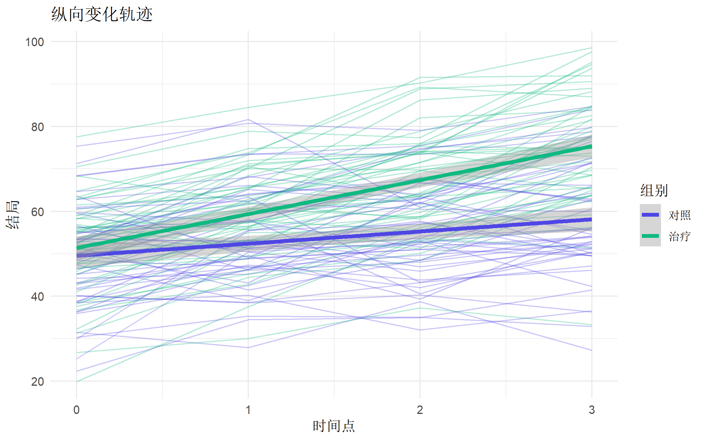
常见问题与陷阱
1. 组数太少
# 随机效应估计需要足够的组数
# 推荐：至少 20-30 个组
# 组数少时，随机效应方差估计可能为 02. 奇异性拟合
# 检查是否存在奇异性
isSingular(model2)[1] TRUE# 解决方案：
# 1. 简化随机效应结构
# 2. 移除相关性参数
# model_nocorr <- lmer(y ~ x + (1 | g) + (0 + x | g), data = data)3. 中心化
# 组内中心化（组均值中心化）
student_data <- student_data |>
group_by(class_id) |>
mutate(
study_hours_cwc = study_hours - mean(study_hours) # 组内中心化
) |>
ungroup() |>
mutate(
class_mean_hours = ave(study_hours, class_id) # 组均值
)
# 分解组内和组间效应
model_cwc <- lmer(
score ~ study_hours_cwc + class_mean_hours + prior_score + (1 | class_id),
data = student_data
)
summary(model_cwc)Linear mixed model fit by REML. t-tests use Satterthwaite's method [
lmerModLmerTest]
Formula: score ~ study_hours_cwc + class_mean_hours + prior_score + (1 |
class_id)
Data: student_data
REML criterion at convergence: 4178.6
Scaled residuals:
Min 1Q Median 3Q Max
-3.3354 -0.6901 0.0148 0.7052 2.7266
Random effects:
Groups Name Variance Std.Dev.
class_id (Intercept) 51.05 7.145
Residual 53.33 7.303
Number of obs: 600, groups: class_id, 30
Fixed effects:
Estimate Std. Error df t value Pr(>|t|)
(Intercept) 37.29756 13.75866 29.07582 2.711 0.0111 *
study_hours_cwc 1.72825 0.07837 568.00213 22.053 <2e-16 ***
class_mean_hours 1.69527 1.35998 28.00013 1.247 0.2229
prior_score 0.40745 0.02595 569.64949 15.702 <2e-16 ***
---
Signif. codes: 0 '***' 0.001 '**' 0.01 '*' 0.05 '.' 0.1 ' ' 1
Correlation of Fixed Effects:
(Intr) stdy__ clss__
stdy_hrs_cw -0.001
clss_mn_hrs -0.986 0.000
prior_score -0.137 0.010 0.0044. 收敛问题
# 收敛失败时的解决方案
# 1. 增加迭代次数
lmerControl(optimizer = "bobyqa", optCtrl = list(maxfun = 100000))
# 2. 使用不同优化器
lmerControl(optimizer = "nloptwrap")
# 3. 简化模型
# 4. 对变量标准化完整分析模板
# ========== 多水平模型完整流程 ==========
library(lme4)
library(lmerTest)
library(performance)
# 1. 数据准备和探索
# - 识别层次结构
# - 可视化组间差异
# 2. 计算 ICC
null <- lmer(y ~ 1 + (1 | group), data = data)
icc(null)
# 3. 逐步构建模型
m1 <- lmer(y ~ x1 + (1 | group), data) # 随机截距
m2 <- lmer(y ~ x1 + (x1 | group), data) # 随机斜率
m3 <- lmer(y ~ x1 + group_var + (x1 | group), data) # 跨层变量
m4 <- lmer(y ~ x1 * group_var + (x1 | group), data) # 跨层交互
# 4. 模型比较
anova(m1, m2, m3, m4)
compare_performance(m1, m2, m3, m4)
# 5. 模型诊断
check_model(m3)
# 6. 结果呈现
summary(m3)
tab_model(m3)总结
| 模型类型 | 语法 | 适用场景 |
|---|---|---|
| 随机截距 | (1 | g) |
组间基线不同 |
| 随机斜率 | (x | g) |
效应强度因组而异 |
| 无相关性 | (1 | g) + (0 + x | g) |
截距和斜率独立 |
| 三层嵌套 | (1 | g1/g2) |
多层嵌套结构 |
| 交叉随机效应 | (1 | g1) + (1 | g2) |
非嵌套分组 |
报告多水平模型的 Checklist
推荐阅读
- Raudenbush SW, Bryk AS. Hierarchical Linear Models
- Snijders TAB, Bosker RJ. Multilevel Analysis
- lme4 package 文档
- UCLA 多水平模型教程